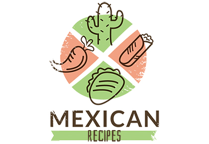

Shirmp Blackbean Tacos!
INGREDIENTS
- 2 teaspoons canola oil
- 3/4 pound medium shrimp, peeled and deveined
- 1 1/2 teaspoons ground cumin, divided
- 1/8 teaspoon ground red pepper
- 1 (15-oz.) can unsalted black beans
- 1/2 teaspoon chili powder
- 8 (6-in.) corn tortillas
- 1 cup hot cooked brown rice
- 1/2 cup fresh pico de gallo
- 1/4 cup sliced green onions
- 1 ripe avocado, thinly sliced
HOW TO MAKE IT
- Step 1:
Heat oil in a large nonstick skillet over medium-high. Add shrimp, 1 teaspoon cumin, and pepper; cook 5 minutes or until done, stirring occasionally. Remove shrimp from pan.
- Step 2:
Drain beans in a colander over a bowl, reserving 2 tablespoons liquid. Add beans, reserved liquid, 1/2 teaspoon cumin, and chili powder to pan; cook 3 minutes, mashing beans with a fork.
- Step 3:
Working with 1 tortilla at a time, heat tortillas over medium-high directly on the eye of a burner 15 seconds on each side.
- Chef's Notes:
Divide bean mixture, rice, shrimp, pico, onions, and avocado evenly among tortillas. Garnish with cilantro leaves; serve immediately..